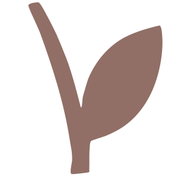

do-what
暂无运行
从左侧工作区中选择，或直接用侧栏里的新建 Run 发起一次协作。
打开工作区
浏览历史
概览
引擎待机中
历史

暂无历史记录
新建 Run
从这里发起一次轻量协作，不进入大配置页。
这次要做什么
协作模式
单引擎执行
一个节点直接完成
主从协作
主执行加辅助校验
分工协作
按阶段拆分
自主编排
仅在需要时开启
参与节点
Claude Code
主执行
Codex
校验 / 收口
▶
更多选项
审批策略
标准审批
Soul 策略
仅加载当前 Run 相关内容
自主编排
默认关闭，需要时再启用